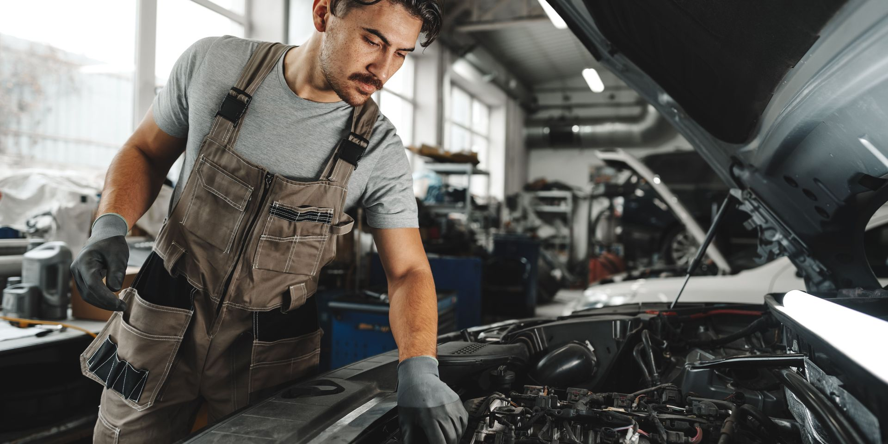
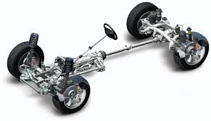
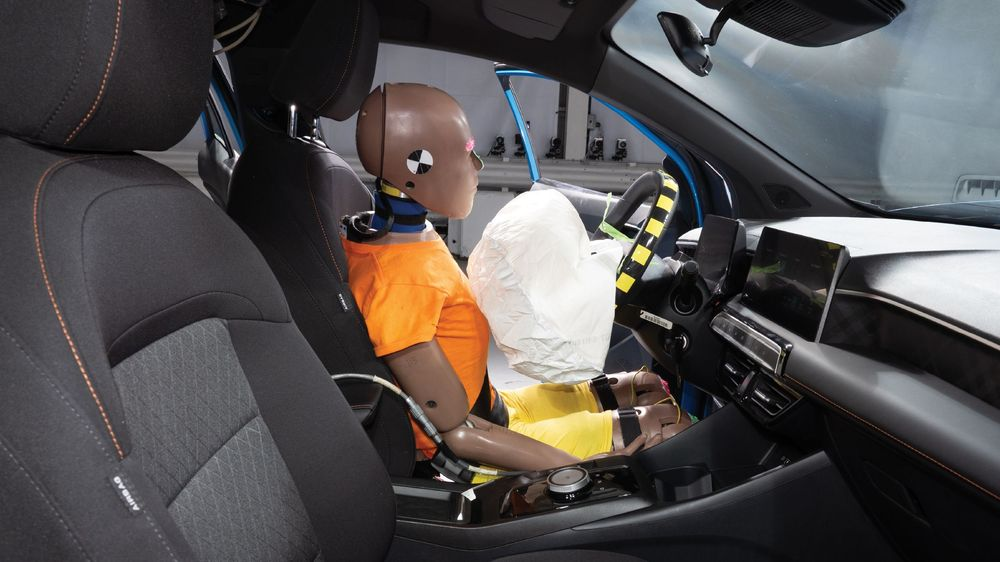
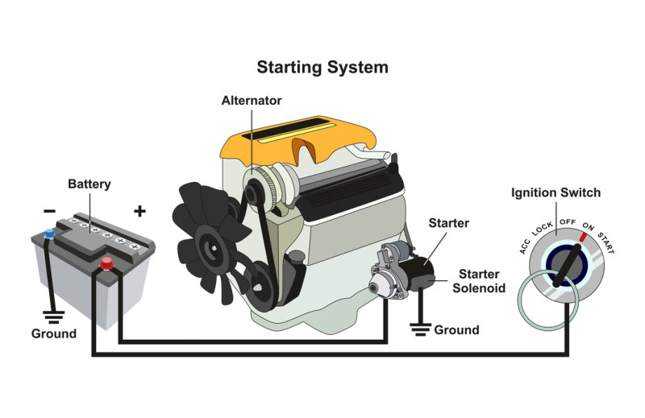

Introducere în Lumea Automobilului
Automobilul reprezintă una dintre cele mai complexe și fascinante invenții ale erei moderne. Ceea ce la exterior pare a fi doar o structură metalică aerodinamică, ascunde în interior mii de piese care lucrează în perfectă armonie. Acest proiect își propune să exploreze 'anatomia' mașinii, de la forța motorului și precizia sistemului de transmisie, până la tehnologiile de siguranță care ne protejează la fiecare drum. Vă invităm să descoperiți universul ingineriei mecanice, descompus pe înțelesul tuturor.
Motorul: Sursa de Energie
Motorul transformă energia combustibilului în mișcare mecanică prin explozii controlate în interiorul cilindrilor. Acesta generează forța necesară deplasării, transformând mișcarea verticală a pistoanelor în mișcare de rotație prin intermediul arborelui cotit. Este inima automobilului, fiind susținut de sisteme vitale precum răcirea, ungerea și distribuția pentru a funcționa eficient și fără întreruperi.

Transmisia: Controlul Puterii
Transmisia preia puterea de la motor și o direcționează către roți, adaptând forța și viteza în funcție de necesități. Prin intermediul cutiei de viteze și al ambreiajului, sistemul permite șoferului să gestioneze accelerația și să decupleze motorul când vehiculul staționează. În final, diferențialul și planetarele asigură distribuția rotației către roți, garantând stabilitatea și manevrabilitatea mașinii pe orice tip de drum.
Șasiul și Trenul de Rulare: Structura de Rezistență și Control
Șasiul reprezintă fundația și coloana vertebrală a automobilului,
având rolul vital de a susține toate componentele mecanice și
caroseria. Proiectat pentru a oferi o rigiditate maximă, acesta
absoarbe forțele de torsiune și protejează integritatea pasagerilor în
cazul unui impact. Este elementul central care definește durabilitatea
și siguranța structurală a întregului vehicul.
Trenul de rulare cuprinde ansamblul sistemelor care gestionează
contactul mașinii cu drumul, incluzând suspensia, direcția și sistemul
de frânare. Acesta este responsabil pentru transformarea puterii în
mișcare fluidă, absorbind denivelările și menținând aderența optimă în
viraje. Un tren de rulare performant asigură echilibrul perfect între
confortul pasagerilor și controlul precis al șoferului.

Caroseria și Interiorul: Estetică și Protecție
Caroseria reprezintă învelișul exterior al automobilului, având rolul
dublu de a asigura un design aerodinamic și de a proteja ocupanții
împotriva intemperiilor sau a accidentelor. Aceasta este proiectată cu
zone de deformare controlată pentru a absorbi energia unui impact,
fiind totodată elementul care definește identitatea vizuală a
vehiculului și eficiența consumului prin reducerea rezistenței la
înaintare.
Interiorul este spațiul dedicat interacțiunii dintre utilizator și
vehicul, punând accent pe ergonomie, siguranță pasivă și confort
acustic. De la planșa de bord ce grupează instrumentele de control,
până la materialele de finisare și sistemele de climatizare,
habitaclul este conceput să ofere o experiență de condus intuitivă,
transformând automobilul într-un spațiu sigur și tehnologizat pentru
pasageri.

Sistemul Electric: Rețeaua Vitală
Sistemul Electric: Rețeaua Vitală Sistemul electric reprezintă rețeaua inteligentă care gestionează alimentarea cu energie și comunicarea electronică între toate componentele vehiculului. Acesta are rolul crucial de a asigura pornirea motorului prin intermediul bateriei și de a menține alimentarea consumatorilor în timpul mersului cu ajutorul alternatorului. De la unitățile de control care optimizează performanța motorului până la sistemele de siguranță, iluminare și confort, acest sistem coordonează fluxul continuu de informații și energie necesar funcționării moderne a automobilului.
